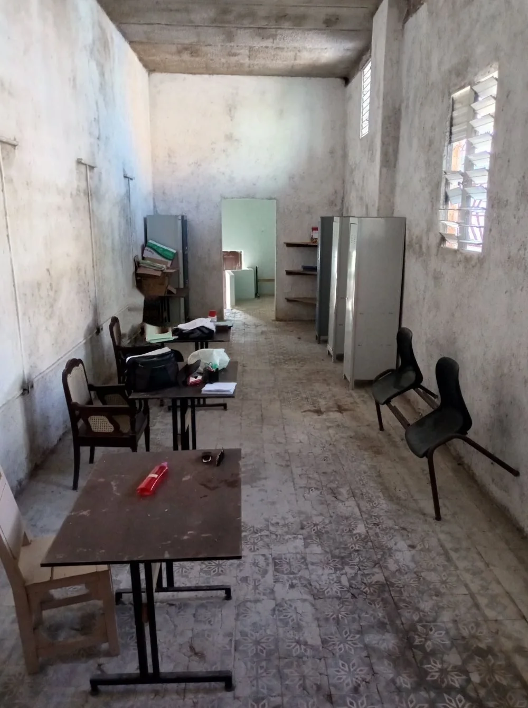
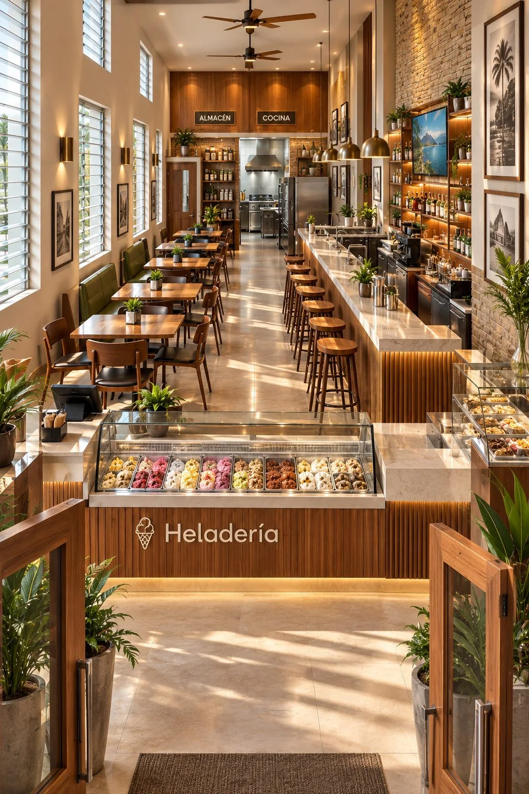
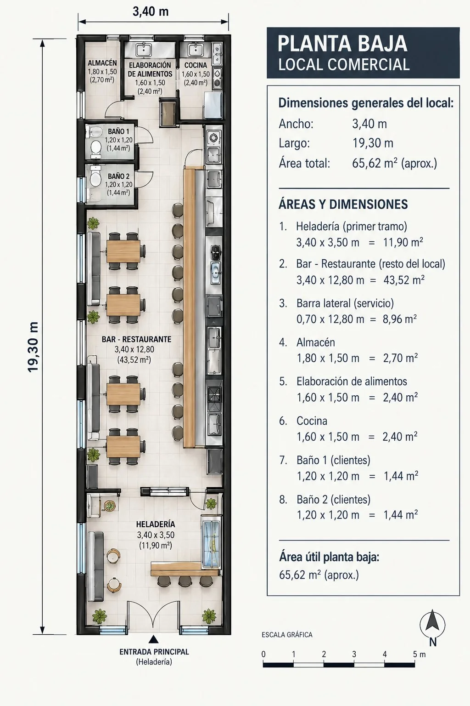

Servicios
Proyectos
Proyectos de ingeniería y arquitectura para obras nuevas, remodelaciones y construcción en general.
Diseño 3D
Modelos en 3D para que vea su obra terminada antes de construirla.
Diseño estructural
- Losas en voladizo
- Escaleras simples, en voladizo y ortopoligonales
- Cisternas
- Estructuras de varios niveles
Decoración y logotipos
Diseño de interiores y decoración, y diseño de logotipos para su negocio.
Remodelación y construcción
Ejecución de remodelaciones y construcción en general con control técnico.
Asesoría y supervisión
Asesoría técnica, supervisión de obras y visitas para evaluación técnica profesional.
Dictamen técnico
Diagnóstico de patologías en su edificación, con sus causas y posibles soluciones.
Venta de materiales de construcción
Suministro de materiales para su obra, con cálculo de cantidades según lo que se vaya a ejecutar.
Carpintería laminada y de cristal
Producción y comercialización de carpintería laminada y de cristal.
Carpintería y mobiliario de madera
Producción y comercialización de carpintería de madera y mobiliario de madera.
Materiales y presupuestos
Cálculo de cantidades de materiales según las acciones a ejecutar y presupuestos de construcción.
Antes y después
Estado actual de cada ambiente, en fotos reales, frente a la propuesta de remodelación en 3D. Toque una imagen para verla en grande.
Fachada
Frente de la vivienda: pintura y repello, enchape imitación piedra, carpintería de aluminio y vidrio y barandas de acero inoxidable.
Sala y comedor
Piso conservado, nueva distribución del mobiliario, iluminación y paneles de madera detrás del televisor.
Cocina
Encimeras y estantes de obra sustituidos por mobiliario a medida, barra de desayuno e iluminación indirecta.
Área bajo la escalera
Aprovechamiento del espacio como zona de lavado, con muebles bajos, fregadero, estante y nueva baranda de acero inoxidable.
Baño
Enchape claro, meseta con lavamanos, cristal en la ducha, estantes y espejo con luz.
Dormitorio principal
Mismo armario de madera, nueva ropa de cama, cortinas, mesitas de noche y lámparas de luz cálida.
Habitación infantil
Propuesta de diseño para una habitación de 3 × 4 m, con fondo azul claro y blanco, cama pequeña, juguetes y decoración infantil.
Sobre las imágenes. Las fotos «Antes» muestran el estado real de cada ambiente. Las imágenes «Después» y «Propuesta» son visualizaciones en 3D del diseño, no obra terminada.
Lista de precios
| Servicio | Precio |
|---|---|
| Diseño y modelado 3DHasta 10 variantes | 50 USD |
| Logotipos personalizadosHasta 10 variantes | 25 USD |
| Visita a obra, inspección y dictamenCon informe de posibles soluciones | 30 USD |
| Proyecto de ingeniería y arquitectura de un nivel | 80 USD |
| Elaboración de presupuestos | 30 USD |
| Proyecto de más de un nivelEl precio se negocia según el caso | A convenir |
Servicio llave en mano
Usted nos dice qué necesita. Nosotros nos encargamos del proyecto, el presupuesto, los materiales, la ejecución y la supervisión. Usted no tiene que preocuparse por nada.
Cómo trabajamos
- Visita y evaluaciónVamos a su obra y evaluamos la situación técnicamente.
- Proyecto y presupuestoDiseño, cálculo de materiales y presupuesto claro.
- Ejecución y supervisiónConstruimos o supervisamos hasta la entrega.
Sobre el ingeniero
Rolando Gámez Rodes, Ingeniero Civil graduado de la Universidad de Matanzas Camilo Cienfuegos. Socio y administrador de Constructora Gámez y Asociados SURL desde diciembre de 2021, con experiencia en obras en Cuba y en el extranjero, y en docencia universitaria.
Currículum
Experiencia profesional
- 2021 – hoy: socio y administrador, Constructora Gámez y Asociados SURL.
- 2016 – 2021: TCP, servicios de construcción, reparación y mantenimiento de inmuebles.
- 2014 – 2015: ingeniero principal, International Airport Development Company Ltd. (Saint Vincent y las Granadinas): dos puentes y sistemas de drenaje en el aeropuerto internacional de Argyle.
- 2013 – 2015: ingeniero estructural, Caribbean Engineering and Design Consultants Ltd.: inspección, supervisión y diseño de puentes de carretera, un puente colgante peatonal, viales, muros de contención y protección de taludes.
- 2011 – 2013: profesor del Departamento de Construcciones, Universidad de Matanzas.
Obras realizadas
- Oficinas de Apicultura, agencia de Taxis Cuba, Nave de Beneficio de Acopio, Casa del Adolescente.
- Talleres y Oficina del Conservador de Matanzas, Correo de Playa Larga.
- Oficinas de la División Territorial de Etecsa.
- Reparación de oficinas, viviendas y perrera de la Aduana (Varadero, Matanzas y otras provincias), Biblioteca Gener y del Monte, correos de Varadero, Santa Marta, Boca, Carlos Rojas, Bolondrón y Limonar.
- Tanque séptico en la villa de alojamiento Humberto Álvarez.
Proyectos de ingeniería
- Rehabilitación del puente viejo de Buey Vaca (2011).
- Colaboración en el diseño de un puente metálico sobre el río Yumurí (2012).
- Inspección y evaluación de 5 puentes de carretera dañados por inundaciones (2014).
- Diseño de un puente colgante peatonal de 15 m (2014).
- Protección y corrección del cauce del río Buccament (2014).
- Construcción de dos puentes sobre el río Yambo en la pista del aeropuerto de Argyle (2014-2015).
Formación
- 2006 – 2011: Ingeniero Civil, Universidad de Matanzas Camilo Cienfuegos.
- 2001 – 2004: Técnico en Construcción Civil, Politécnico Antonio Maceo.
- 2012: Diplomado en herramientas de investigación para las ciencias técnicas.
- 2012: Curso de Diseño, Tecnología, Construcción y Conservación de Puentes.
- 2011 – 2012: Diplomado de superación para profesores jóvenes.
Docencia e investigación
- Profesor de Topografía I y II, Resistencia de Materiales, Estructuras Metálicas, Puentes y Alcantarillas, Modelación Mecánica II y Proyecto Integrador II.
- Jefe de Disciplina de Topografía (2011).
- Miembro del Grupo de Marketing y Gestión Urbana de la Universidad de Matanzas desde 2009.
- Varias comunicaciones científicas y publicaciones (2011-2012) sobre patrimonio, puentes y gestión urbana.
Reconocimientos y membresía
- Miembro de la UNAICC (Unión Nacional de Arquitectos e Ingenieros de la Construcción de Cuba) desde 2011.
- Premio relevante en los Fórum Municipal y Provincial de Historia (2012).
- Premio territorial del CITMA por un logro científico tecnológico (2012).
Idiomas y herramientas
Español (nativo), francés e inglés (lectura, escritura y expresión oral).
Oportunidad de inversión: heladería, bar y restaurante en Matanzas
Buscamos inversionistas para remodelar un local comercial existente en pleno centro de Matanzas y convertirlo en una heladería, bar y restaurante, con un contrato de explotación de 15 años y ganancias compartidas entre ambas partes.






El negocio
Un local largo y estrecho, bien aprovechado: la heladería al frente atrae al público desde la calle, y detrás se desarrolla el bar-restaurante con barra lateral de servicio, mesas junto a las ventanas, cocina, elaboración de alimentos, almacén y dos baños para clientes.
| Área | Dimensiones | Superficie |
|---|---|---|
| Heladería (primer tramo) | 3,40 × 3,50 m | 11,90 m² |
| Bar-restaurante (resto del local) | 3,40 × 12,80 m | 43,52 m² |
| Barra lateral de servicio | 0,70 × 12,80 m | 8,96 m² |
| Almacén | 1,80 × 1,50 m | 2,70 m² |
| Elaboración de alimentos | 1,60 × 1,50 m | 2,40 m² |
| Cocina | 1,60 × 1,50 m | 2,40 m² |
| Baños 1 y 2 (clientes) | 1,20 × 1,20 m c/u | 2,88 m² |
Cómo funciona la inversión
Lo que aporta el inversionista
- El capital para la remodelación completa del local.
- Equipamiento de heladería, bar y cocina, según el proyecto aprobado.
Lo que aportamos nosotros
- El local existente en Calle Narváez, con 15 años de explotación garantizada por contrato.
- Proyecto, diseño 3D, presupuesto, ejecución y supervisión de la obra, llave en mano.
- La administración y operación del negocio.
Ganancias
- Los porcientos de ganancia para cada parte se acuerdan por contrato antes de iniciar.
- Reportes periódicos de ventas y gastos, a disposición del inversionista.
Retorno de la inversión
- El plazo y la forma de recuperar el capital se pactan por escrito, antes de invertir.
- Después del retorno, ambas partes siguen compartiendo ganancias hasta cumplir los 15 años.
Siguiente paso: escríbanos y le enviamos el presupuesto de la remodelación y la propuesta de contrato con los porcientos de ganancia y el calendario de retorno. Las imágenes 3D y el plano son ilustrativos de la propuesta.
Más proyectos para invertir
Además del local de Calle Narváez, presentamos imágenes 3D de otros proyectos en los que puede invertir: viviendas campestres, áreas exteriores con piscina y un edificio de hospedaje. Toque cualquier imagen para verla en grande.
Viviendas
Áreas exteriores con piscina
Hospedaje y oficina
Distribución de un nivel alargado con oficina y seis habitaciones de 3,00 × 2,50 m, cada una con su baño, y un pasillo exterior de acceso. A la derecha, vistas interiores de oficina, pasillo, habitación, baño y comedor.
Importante: las imágenes son 3D ilustrativas de cada propuesta. Ubicación, presupuesto, plazos y condiciones de cada inversión se acuerdan por escrito antes de comenzar.